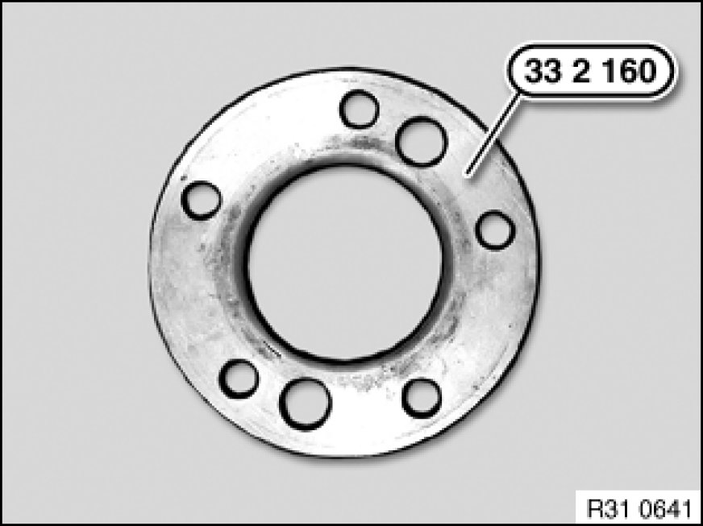
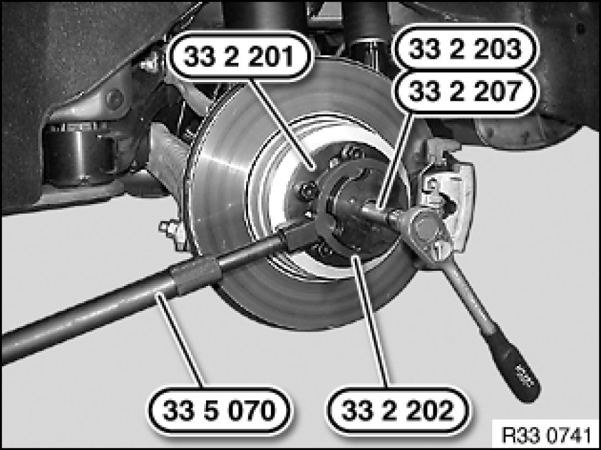
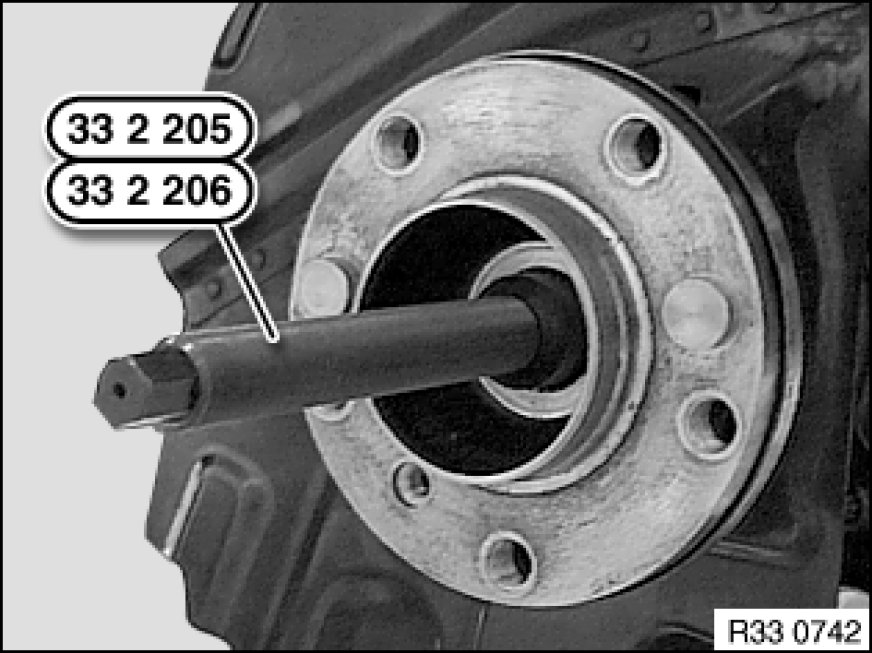
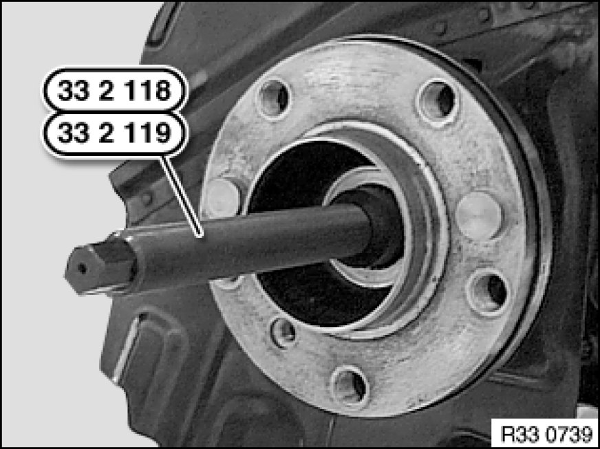
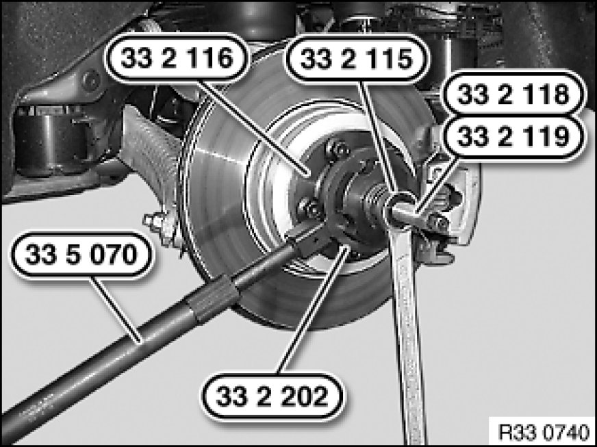

Pressing Output Shaft Out of Drive Flange and Drawing in (Output Shaft Removed From Rear Differential)
33 21 ... - Pressing output shaft out of drive flange and drawing in (output shaft removed from rear differential)

Special tools required:
- 33 2 111 33 2 110 Removal and Installation Tool
- 33 2 115 33 2 110 Removal and Installation Tool
- 33 2 116 33 2 110 Removal and Installation Tool
- 33 2 117 33 2 110 Removal and Installation Tool
- 33 2 118 33 2 110 Removal and Installation Tool
- 33 2 119 33 2 110 Removal and Installation Tool
- 33 2 160 33 2 160 Spacer Ring
- 33 2 201 33 2 200 Fixture
- 33 2 202 33 2 200 Fixture
- 33 2 203 33 2 200 Fixture
- 33 2 205 33 2 200 Fixture
- 33 2 206 33 2 200 Fixture
- 33 2 207 33 2 200 Fixture
- 33 5 070 33 5 070 Extension Piece (2)

Warning!
Risk of injury!
It is not permitted to use the impact screwdriver to press out and draw in the output shaft.
Important!
Risk of damage!
To avoid damaging the output shaft and adjoining parts, it is essential during the pressing-out process to repeatedly check and if necessary correct the position of the output shaft.

Important!
To avoid damaging the dust sleeve, use special tool 33 2 160 33 2 160 Spacer Ring to press out and draw in the output shaft after removing the brake disk.
Note:
Rounded inside edge of special tool 33 2 160 33 2 160 Spacer Ring must point to drive flange.

Special tool 33 2 200:
Secure output shaft against falling out.
Screw on special tool 33 2 203 33 2 200 Fixture, 33 2 207 33 2 200 Fixture and 33 2 201 33 2 200 Fixture with all wheel studs to drive flange.
Press output shaft out of drive flange; in so doing, grip basic body 33 2 201 33 2 200 Fixture with special tools 33 2 202 33 2 200 Fixture and 33 5 070 33 5 070 Extension Piece (2).

Important!
No oil permitted on shaft journal thread!
Lightly oil spline teeth of output shaft.
Insert output shaft into drive flange.
Screw special tool 33 2 205 33 2 200 Fixture / 33 2 206 33 2 200 Fixture onto output shaft.
Mount special tool 33 2 201 33 2 200 Fixture with three wheel studs to drive flange.
Draw in output shaft with special tool 33 2 205 33 2 200 Fixture up to stop; in so doing, grip basic body 33 2 201 33 2 200 Fixture with special tools 33 2 202 33 2 200 Fixture and 33 5 070 33 5 070 Extension Piece (2).
Special tool 33 2 100:
Secure output shaft against falling out.
Screw on special tool 33 2 111 33 2 110 Removal and Installation Tool, 33 2 117 33 2 110 Removal and Installation Tool and 33 2 116 33 2 110 Removal and Installation Tool with all wheel studs to drive flange.
Press output shaft out of drive flange; in so doing, grip basic body 33 2 116 33 2 110 Removal and Installation Tool with special tools 33 2 202 33 2 200 Fixture and 33 5 070 33 5 070 Extension Piece (2).

Important!
No oil permitted on shaft journal thread!
Lightly oil spline teeth of output shaft.
Insert output shaft into drive flange.
Screw special tool 33 2 118 33 2 110 Removal and Installation Tool / 33 2 119 33 2 110 Removal and Installation Tool onto output shaft.

Mount special tool 33 2 116 33 2 110 Removal and Installation Tool with three wheel studs to drive flange.
Draw in output shaft with special tool 33 2 115 33 2 110 Removal and Installation Tool up to stop; in so doing, grip basic body 33 2 116 33 2 110 Removal and Installation Tool with special tools 33 2 202 33 2 200 Fixture and 33 5 070 33 5 070 Extension Piece (2).